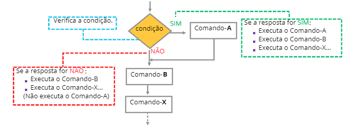
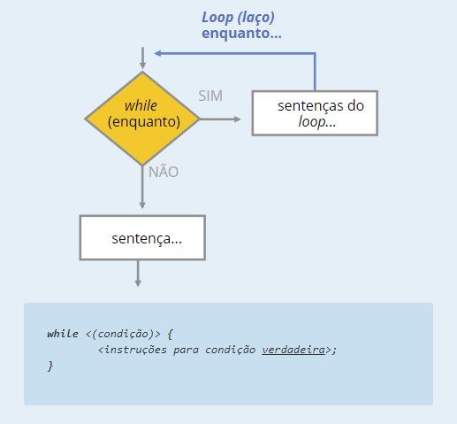
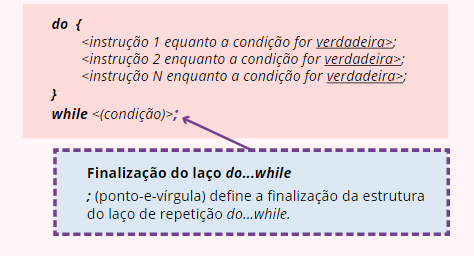
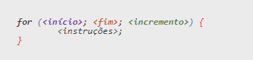

Introdução ao JavaScript
De maneira equivocada, muitos "desconhecedores" e desinformados costumam afirmar que o JavaScript é o "Java
interpretado". Isso é reflexo de uma completa falta de conhecimento não apenas da linguagem JavaScript mas
também da linguagem Java.
Em resumo, o código em JavaScript é uma linguagem de script dinâmica, que reconhece a construção de objetos
baseada em protótipos.
Com a intenção de reduzir o número de conceitos exigidos para se aprender a linguagem, a sintaxe básica do
JavaScript é, simplesmente, muito similar à sintaxe das linguagens C++ e Java.
Dessa forma, as estruturas da linguagem JavaScript – como if, for, while, switch, entre outras – funcionam
exatamente do mesmo modo (salvo algumas particularidades muito específicas da própria linguagem).
SCRIPTS
- Não precisam ser compilados
- Texto com uma série de instruções escritas para serem seguidas. O termo é uma redução da palavra inglesa
manuscript, que significa “manuscrito”, “escrito à mão”.
Objeto
São elementos ou sujeitos de uma ação, responsáveis por um comando ou por uma instrução. Por exemplo:
Um documento web = uma página web carregada pelo navegador (browser)
Uma tela web = uma janela web carregada pelo navegador (browser).
Exemplos de objeto: document, window.
Método
É uma forma ou um recurso que indica como um objeto será manipulado ou processado. Podemos definir métodos de
entrada ou de saída.
Exemplos de método: prompt, form, alert, write.
Evento
É um recurso de ação aplicado ao objeto.
Exemplos de eventos: onclick, onblur, onfocus, onload, onmousedown, onmousemove, onmouseout, onmouseover.
Relação entre Objeto e Método
Como vimos anteriormente, para manipular um objeto, é necessário definir e aplicar uma forma ou um recurso, que
denominamos como método. Sendo assim, relacionamos, a seguir, alguns métodos com seus respectivos
objetos:
Recomendação para Codificação
Para uma codificação agradável, bem aceita entre os desenvolvedores, feita com clareza, colaborativa, e de fácil
alteração e manutenção futura, recomenda-se a observação de alguns detalhes sutis.
Vejamos:
Todos os comandos devem terminar com o sinal de ponto-e-vírgula (;)
Um bloco de comandos deve ter início e fim representados pelo uso das chaves { }
O uso do espaço em branco permite uma melhor visualização dos comandos e, consequentemente, facilita futuras
correções e até manutenções (inserção, alteração ou exclusão) de qualquer conteúdo (comandos, variáveis,
operadores etc).
identificadores
Um item importante a ser considerado ao tratarmos dos identificadores são os caracteres acentuados. É muito
importante estarmos atentos aos caracteres utilizados para os identificadores!
Vejamos:
Os caracteres acentuados são denominados caracteres compostos, sendo interpretados pelo sistema diferentemente
dos caracteres não acentuados (não compostos).
Programação é um identificador diferente de Programacao.
Uma outra característica existente na linguagem de programação JavaScript, que diferencia os seus
identificadores, é o sensitive case, isto é, a diferença entre as letras maiúsculas e minúsculas.
Programação é um identificador diferente de programação.
Palavras Reservadas
Uma “palavra reservada” também é classificada como uma "palavra-chave", por ser de uso restrito.
Palavras Reservadas
| Var |
This |
Case |
Catch |
const |
| return |
default |
continue |
do |
let |
| for |
function |
while |
debugger |
instance of |
| if |
switch |
finally |
typeof |
throw |
| else |
break |
void |
em |
por |
Fluxos de Controle
Sabemos que as linguagens de programação têm suas estruturas bem definidas, para que funcionem de acordo com o
que
foram programadas para fazer.
E você sabe como as linguagens de programação são estruturadas?
As linguagens de programação são estruturadas com técnicas, recursos, códigos e comandos que
classificamos como controle do Fluxo.
Seja convencional, estruturado ou orientado ao objeto, o Controle do Fluxo é indispensável em qualquer linguagem
de
programação. A ausência do Controle de Fluxo (estruturas condicionais e de repetição) acarreta não só grandes
problemas na programação mas também limitações para os programadores de sistemas.
E o que seria ausência de Controle de Fluxo?
Por exemplo, um código sem elementos e parâmetros comparativos ou sem elementos condicionados, avaliados para
executar procedimentos baseados em decisões condicionais, buscando diferentes resultados baseados nos testes
condicionais.
Blocos de Comando
Instruções ou decisões condicionais
São comandos que auxiliam no direcionamento da sequência de execução de um programa por meio da avaliação de
condições lógicas.
A possibilidade de tomar decisões na programação é considerada fundamental e de grande importância na elaboração
de
um código de qualquer linguagem, favorecendo uma aplicação lógica abrangente, avançada e mais complexa.
Uma decisão condicional está relacionada, na avaliação de uma sentença, com a utilização de operadores
relacionais
(ou de comparação) e operadores lógicos.

Instruções de laço
São instruções que controlam o fluxo de execução, permitindo que determinado bloco de instruções do programa
seja
repetido enquanto atender à condição lógica.
Switch
O switch consiste em outro recurso utilizado para apresentar uma lista de opções com seleção única ou múltipla.
A
aplicação da instrução switch implica a elaboração de uma estrutura de testes condicionais, controlada por um
“elemento-chave” ou um comutador (switch).
Nesse caso, o comutador ou “elemento-chave” (campo de indexação) direciona o sentido do fluxo de dados por meio
de
uma estrutura de controle com múltipla escolha. Observe sua sintaxe:
Vantagens de Uso do Switch
A estrutura com switch apresenta uma forma mais ágil e eficiente de verificar determinado valor de uma mesma
expressão diversas vezes. Essa opção de estrutura é empregada quando desejamos atingir mais eficiência e melhor
performance, substituindo, até mesmo, a estrutura condicional if...else, sempre que possível e sempre que a
condição
a ser avaliada for a mesma.
Outra vantagem da estrutura switch está na agilidade de executar e/ou interromper o processamento do código tão
logo
a pesquisa condicional resulte em um valor verdadeiro.
Operador Ternário
Será que você já ouviu falar em operador ternário?
O termo “operador ternário” também é usado na Matemática!
No contexto da Matemática, uma operação ternária (ou 3-ária) é uma operação que contém três operandos, ou seja,
uma
função com três elementos em processamento.
A seguir, veremos o que é um operador ternário na linguagem JavaScript!
Operador Ternário na Linguagem JavaScript
O operador ternário JavaScript (representado por ?:) pode ser usado como atalho da instrução condicional
if...else.
O que teremos, nesse caso, será um operador condicional ternário ?: e uma variante de if...else.
Muito semelhante à instrução if...else, trata-se de uma forma mais simples de executar uma sentença lógica
dependendo do resultado.
Em geral, o operador ternário é aplicado como parte de uma expressão maior, quando uma instrução if...else for
impraticável. Vejamos:
[elemento condicional a testar] ? [resultado se verdadeiro] : [resultado se não verdadeiro ]
Ou então:
(<condição>) ? <expressão para resultado verdadeiro> : <expressão para resultado falso>
Laços de Repetição
Podemos definir laços de repetição como a execução de um certo trecho de
programa um determinado número de vezes. Esse conceito também é conhecido como "malha de repetição"
ou
"looping".
A vantagem de se utilizar o conceito de laço de repetição (looping) é que o programa
torna-se menor, sem alterar a estrutura do código ou comprometer a amplitude de seu
processamento.
Consideramos dois tipos de estruturas de laços de repetição: WHILE E FOR
While
A estrutura condicional while se caracteriza por efetuar um teste lógico no início de um laço de
repetição (looping), verificando se é permitido executar o trecho de instruções subordinadas ao
laço.
Essa estrutura define um fluxo repetitivo de uma ou mais instruções enquanto determinada condição
lógica for verdadeira.
Essa condição, declarada por uma “expressão booleana”, controla a frequência do processamento do
laço e é aplicada sempre que a verificação condicional tiver de ocorrer antes da execução das
instruções.
Vejamos a representação lógica e a sintaxe de while:

Do ... while
Assim como as demais estruturas de repetição, a estrutura do...while também possui uma sintaxe própria.
Vejamos:

For
A seguir, temos a sintaxe da estrutura Incondicional for.
Depois de analisá-la, clique em cada um dos elementos para obter mais informações.

Função do Método confirm()
Você tem ideia da função do método confirm?
Vamos descobrir a função desse método e aplicá-lo!
O método confirm exibe uma caixa de diálogo com dois botões:
Ok
Cancelar.
Isso permite ao usuário tomar uma decisão:
Se for selecionado OK, a condição lógica retorna o valor lógico true.
Se for selecionado Cancelar, a condição lógica retorna o valor lógico false.
Veja a sintaxe do método confirm:
<variável=window.confirm(‘mensagem’);>
.png)